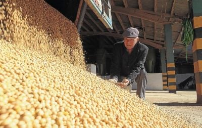

Nossa História
A história do Grupo Soldera começa a se moldar no começo dos anos 60, em Santa Tecla, interior do município de Tupanciretã, na região central do estado do Rio Grande do Sul, com a chegada do Sr. Ataliba Arcângelo Soldera, patriarca da família Soldera. Nascido em uma família de pequenos agricultores que sobrevivia plantando feijão e fumo em terrenos acidentados de Faxinal do Soturno, zona de colonização italiana no centro do Estado, Ataliba é hoje o patriarca de um dos maiores grupos produtores de soja do Rio Grande do Sul. O caminho até erguer este considerável império agrícola, no entanto, foi palmilhado por frustrações, trabalho braçal e perseverança para superar cada revés. Com a família determinada a procurar mais terra para melhorar de vida, no dia 24 de agosto de 1954, quando o Brasil amanhecia chocado pelo suicídio do presidente Getúlio Vargas, Ataliba, o pai e o tio pegavam um trem em Santa Maria rumo ao Paraná. Lá, encontraram um solo fecundo, mas muito mato por derrubar. Se fosse para abrir campo para a lavoura de trigo, por que não ali mesmo em campos de pecuária perto de Faxinal, sugeriu Ataliba. Tentaram em São Sepé, mas duas safras malogradas forçaram a família a buscar a sorte em outro lugar. Sem ir longe, em 1959 encontraram em Tupanciretã o local ideal para fincar raízes. No ano seguinte, trouxeram de Santa Rosa as primeiras sementes de soja, uma planta que até então não tinham familiaridade. – Fomos um dos primeiros a plantar soja em Tupã. Quando chegamos havia duas famílias que já cultivavam, mas uma parou e outra foi embora. Quem bateu o pé, ficou e trouxe o plantio de soja para o município foi o meu pai, meu tio e eu – lembra Ataliba. Além do conhecimento escasso sobre a soja e o seu cultivo, Ataliba ainda precisava vencer a dificuldade de deslocamento quando precisava ir para a cidade ou retornar à propriedade. – Caminhava 20 quilômetros até um vizinho e pegava carona em um caminhão Alfa Romeu. Isso foi feito por pelo menos oito anos – relembra o produtor. Radicado em Tupã, Ataliba foi ainda um dos líderes do movimento que levou à fundação da Cooperativa Agrícola Tupanciretã (Agropan), uma urgência pelo aumento da produção de grãos na região: – Sou o sócio fundador número 5. Queriam que eu fosse o presidente, mas não tinha muito estudo. Aos poucos, a família expandiu a lavoura e comprou mais terras no Estado. Atualmente, o cultivo é feito em Tupanciretã, Joia e São Miguel das Missões. E mesmo com os negócios agora administrados por filhos e netos, não abre mão de ir pelo menos três vezes por semana para fora. – Vou lá, dou alguma ideia, gosto de estar junto. Não consigo ficar em casa. Não paro – diz. Ataliba progrediu mais do que imaginava quando a família decidiu dar uma guinada no destino, mas ainda é um homem que cultiva hábitos simples do tempo em que “plantava de espingarda e colhia de laço” nos terrenos íngremes de Faxinal. Não dispensa um cálice de vinho todas as noites e aos domingos ao meio-dia quando está frio e, em mais uma lição de simplicidade, segue fiel ao tinto colonial em garrafão, bebido em qualquer copo.
Texto extraído da reportagem do jornal Zero Hora©